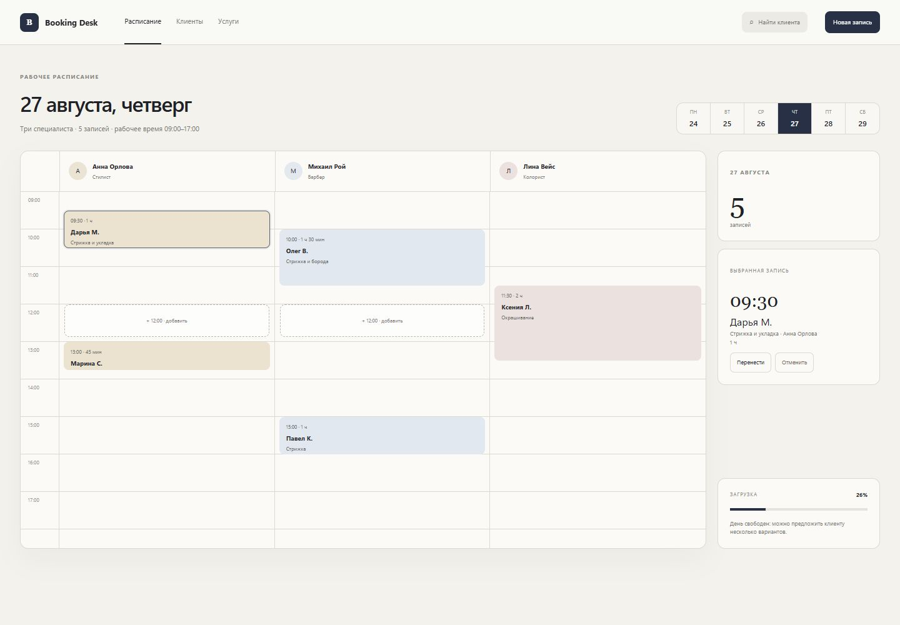
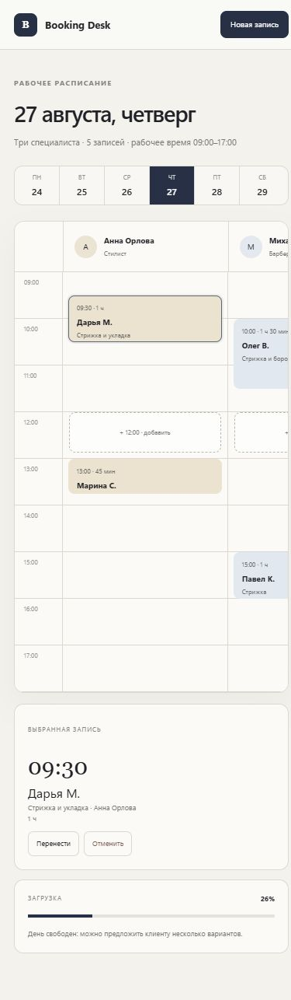

Typography
Aa Inter / GeorgiaPRODUCT DESIGN · WEB APP · 2026
Запись без хаоса.
Рабочее расписание, в котором свободное время, загрузка команды и следующий шаг видны с первого взгляда.

01Один экран вместо таблиц и переписок
01 / Задача
Не ещё один календарь.
Рабочее место администратора.
Главное действие не спрятано в меню: пользователь видит день целиком, замечает конфликт и сразу переносит или создаёт запись. Интерфейс остаётся спокойным даже при плотном расписании.
02 / Интерфейс
Большой экран показывает контекст. Мобильный — решение.
На компьютере важна панорама рабочего дня. На телефоне сохраняются те же приоритеты, но управление становится последовательным и не требует уменьшать интерфейс до нечитаемого состояния.
- 01Расписание специалистов выровнено по общей шкале времени
- 02Выбранная запись остаётся в контексте
- 03Загрузка дня объясняется без сложной аналитики

Responsive behavior, not a scaled desktop
03 / Визуальная система
Тихий интерфейс.
Чёткие решения.
Palette
Neutral base, functional accents
Principle
Сначала действие,потом детали. Visual hierarchy follows the operator’s attention.
BOOKING DESK / РЕЗУЛЬТАТ
Расписание стало
рабочим инструментом.
Создание, перенос и отмена записи проходят в одном сценарии. Конфликт времени блокируется до изменения данных, а на телефоне остаются доступными и календарь, и выбранная запись. Это локальный демонстрационный продукт: данные живут только в текущей сессии.